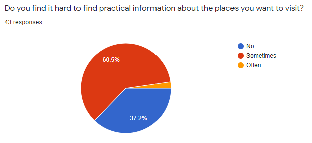
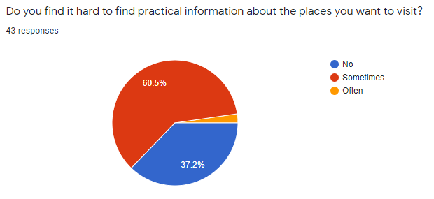

iForm
iForm tasked us with testing and optimizing a landing page and the respective checkout process for a subscription campaign. This was a school project that I worked on with 2 other teammates, and I was primarily responsible for small JS tasks, CSS and git merges.
See Figma prototypeSee code example
Introduction
A personal matter
I’m personally more interested in the arctic areas, culture, hiking, roadtrips than going to warm places and hitting the beach. Throughout my journeys I’ve discovered that not everyone is aware of the nuances of the nordic landscape, and locals struggle dealing with the recent increase in tourism.
Educating tourists from different countries, geographical areas and cultures could help easen the locals’ struggles, and create a safe and memorable (in a good way) experience for visitors.
How does it work in practice?
After observation and research, I prepare content for the website. Instead of showering visitors in general information, I encourage them to use the bucketlist app; there they can choose the places they want to visit, and get specific, practical information about the places of their choice. Such information can be do’s and dont’s (according to locals), the best time to visit, the equipment you need, the unique things you have to watch out for.
The goal is to make this process exciting for visitors, so they WANT TO educate themselves about the place. Nobody likes to be lectured, but putting your bucketlist together, share it and get inspired can be exciting.
Research
It started with observation. I’ve seen the trash at Norway’s most remote and beautiful places with my own eyes. I’ve seen how shamelessly people just hide their kids’ diapers under a rock and move on with their trip. Therefore I had some assumptions that I went out to verify or disprove.
Competitors: I’ve found that there are lots of travel agencies organizing Nordic holidays, but I’ve also found that the use of travel agencies has been declining since the 2000s.
Quantitative research: Via a survey I gained more insight into holiday planning habits and interests of visitors.
 

Qualitative research: Via numerous interviews, I got more familiar with the struggles of locals.
Personas: In order to better understand both parties, and clarify assumptions, I created personas. I was also able to refer back to them upon when making content, design decisions or technical features.

Sketching and wireframing
Wireframing
For wireframing I used pen and paper first, to sketch layout ideas and user flow. I wanted to eliminate basic problems like dead-ends in the user journey or inconsistencies in the content. I also wanted to ideate about what technologies would be the best to use in certain cases.
I created a digital wireframe for the bucket list app in Adobe XD, with special attention to the add / remove features. This way I prepared content for production, and the basic logic for the user flow.
Userflow
In order to prepare for coding I prepared a user flow and a UML chart of how the interactive app would work.
Design
I gathered inspiration from the simplicity of Scandinavian design, hence the dark blue and white color schemes spiced up with large-scale imagery of landscapes and all things Scandinavian.
For icons I used flat, less saturated colors that fit the clean design.
For typeface I use Inter, which is a sans-serif typeface. Sans-serif is a clean choice, but it’s versatile enough for both headings and paragraphs using a variety of its font weights.
The emphasis is on the travel destinations, therefore the images should be in focus. The simple design and the sans-serif font lets the imagery be in focus.


Prototyping
In my prototyping phase I created a prototype that’s high-fidelity in design for the web page, where I implemented a more detailed user flow and included content, like the countries and specific places, as well as the bucket list app.
I also created a functionally and design-wise high fidelity prototype for the bucket list web app, where I included functionality for the country selection, to view the most popular places in Norway, add and remove items from the bucket list, and view the bucket list in a new window.
Major changes in the prototyping phase were:
- Adding a sidebar to the bucketlist app, so users can see their list all the time, instead of having to go to a separate page
- Changing the menu placement to reveal destinations instead of putting them in a drop-down. Since the survey proved that location is the first thing people figure out, locations should be available without clicking. Hence the menu on the side.
- Changing the transparency of the form, to make it more universal; the text within is now more readable regardless of background image and position.
UX
It was challenging to do good testing done during the 2020 pandemic situation, but the vast selection of online tools helped me overcome this.
Usability testing was limited to interviewing the few people that were close to me (friends and family), but aren’t necessary the target audience. Nevertheless, it still helped me flush out major usability flaws, like the sidebar being too big in the app (or that there was a need for the sidebar, at all).
In order to get more feedback, I used usabilityhub to create a 5-second test. I showed the top of the index page for users for 5 seconds and asked the following questions afterwards:
- What do you think the page is about?
- What grabbed your attention?
- What’s your impression about the site?
- What is the mood/atmosphere of the site?
- What words can you recall?
The reception of the design was generally positive (some said it was a little gloomy), and people understood that the page is about travelling and Scandinavia.
For the app, I added a “how does it work?” button, so people have a helping hand using the app for the first time.
From design to code
My biggest challenge was that I really wanted to design something visually unique, but reusable and responsive, because I knew I would be working a lot with API later on, and then populate the HTML with fetched data.
Therefore I took a rather lengthy design process, and spent a week on sketching and pseudo-coding the elements to figure out how to make them reusable and responsive with an optimal amount of code.
Reusable HTML elements
Throughout the whole design process I had a focus on technical feasibility. Based on the prototype I set up different HTML/CSS components I could reuse later in my template tags for displaying content from an API, or just in general layout.
This took a significant amount of time in the beginning, but saved a lot of time in later phases of production. When I started filling the page up with content building the actual page took little time, so I could focus on the content creation. Reusing HTML elements this way also helped keeping a consistent appearance throughout the whole site.
React.js & API
I used a JSON object generated from Google Sheets for storing data because It’s easy to maintain and navigate. I used React.js for building the bucketlist app, because it’s a highly dynamic page, often reusing elements and updating the UI.
How does it work?
The user selects a country that calls a component.
The selected country’s component then:
- fetches the data from the selected country’s JSON
- uses a for loop to skim through every item and see if they are “popular”
- then creates a JSX “item” for every place (pre-styled with CSS)
- pushes that item to an array
- returns the array
- renders the filters for the given country
How filtering works
The filters are buttons with an eventhandler.
The eventhandler then iterates through the objects in a similar way “popular” does (with a for loop).
The button changes to an “active” state, to visually indicate what filter is applied.
Clicking any other filter / button removes the active state from the previous button, and displays different suggestions.